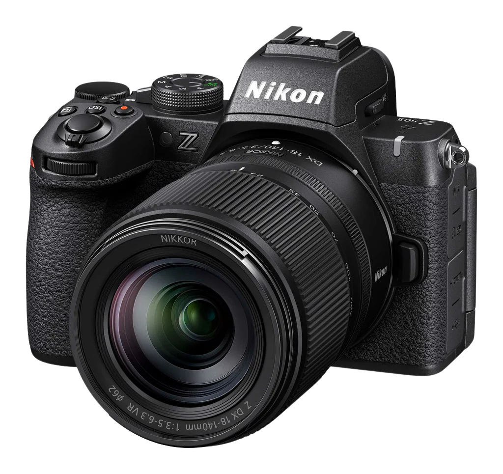

LemonTree Photography

LemonTree Photography offers high-quality Photography and photo-editting for low prices, founded in just July of 2025, LemonTree is less of a corporation and more of a group
As we are such a young and small group, our array of equipment is realtively small, however it is off high quality. We rely mainly on the Nikon Z50-II mirrorless camera, the Nikon Z50-II offers advanced autofocus, high resolution, powerful colour control, it behaves well with all forms of photography, portraits, landscapes, long or short range, day or night, its an undeniably versatile camera.
Our photo-editting applications are also particularly powerful, operating mainly with Adobe Lightroom Classic, managing the colour grading, shadows and lighting, texture, and overall feel of the photo. We also utilise Adobe Photoshop, though not as much, Photoshop allows emmense control over small imperfections, like skin softening, lens flares, people in the background, reflections, really anything.